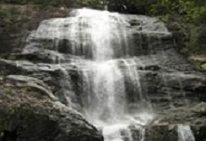

旅游业发展助推丽水富民强市

近年来，丽水市委、市政府高度重视发展休闲养生经济，明确提出打响 “秀山丽水、养生福地”品牌，提出了 “用十年左右的时间把旅游业打造成丽水第一产业”旅游总体目标。市旅游局坚持“全市作为一个大景区”的发展理念，以高等级旅游景区和省级旅游度假区创建为重要载体和抓手，全面提升我市旅游产品市场竞争力，促进我市旅游业的快速发展。 通过几年来的艰苦努力，我市已实现了由一个“有资源，没产品”的旅游资源大市，跨越成为一个旅游产品体系较丰富、旅游服务体系较完善的旅游产业强市，实现了由浙江省旅游“冷区”，跨越成为浙江省旅游“热区”。
目前我市大景区建设取得重大突破，全市已拥有国家4A级旅游景区13家;我市高等级旅游景区拥有量已经从2001年时的全省末尾跻身到全省前列。
2010年、2011年，丽水市委、市政府连续在上海组织举办“丽水旅游上海推介会”，市长主持，市委书记亲自推荐，市四大班子一把手亲自参加。推荐会主推丽水4A级旅游景区，叫响“秀山丽水、养生福地”品牌形象。我局借力新闻媒体的力量扩大旅游宣传营销的覆盖面。自2011年7月起，丽水旅游形象宣传片开始在中央电视台播出，这极大的提升丽水旅游在国内外的知名度和美誉度。在运用传统媒体宣传营销的同时积极开拓网络营销新模式，如我局在新浪网和腾讯网开通了“丽水旅游”官方微博，积极通过微博等网络的新兴媒介开展旅游宣传和营销活动。
全市共有旅行社59家，导游人员718名，星级饭店51家。市旅游局坚持“以质量取胜，以服务赢市场”的理念，注重旅游企业品质培育和从业人员培训。2011年12月市旅游局举办了丽水市首届金牌导游大赛，通过大赛使导游们相互学习，相互借鉴，提升全市导游队伍的技能水平。丽水市旅游集散中心连续五年进入全国百强旅行社行列，排名处于前50位。对旅游企业中高级管理人才，实行“政府买单免费培训”的方式，以积极弥补旅游企业队伍规模较小的弱项，使水平不落后，服务不缺位，旅游市场秩序井然。
旅游业成为推进丽水生态文明建设的优势产业。 “十一五”期间，丽水市旅游总收入连续五年高速增长，连续五年增幅均为浙江省第一，丽水市用三年时间实现了旅游接待人数和旅游总收入的两个翻番，用四年时间使两项指标达到了“十五”期末的三倍;”十一五”在建旅游项目数浙江省第二，共107个项目，仅次于杭州市;十一五期间，丽水市旅游经济对GDP和第三产业增加值的贡献全省第二，2010年分别为18.1%和45%，今年1-11月，全市旅游接待总人次2687.3万人次，同比增长31.46%;旅游总收入149.82亿元，同比增长32.15%。预计全年全市旅游接待2750万人次，旅游总收入155亿元。旅游产业已成为丽水市富民强市的战略性支柱产业。
旅游业成为拉动丽水百业兴旺的动力产业。旅游业的发展不仅为城镇的商业服务业增加了客源，直接推动了商业服务业的发展，而且带动了旅游景区和乡村旅游点周边的农业开发与农林渔产品的销售。青田石雕、龙泉青瓷宝剑、遂昌和松阳黑陶、云和木制玩具等区域特色产业也因为旅游业的发展，变得更有活力。丽水市遂昌县湖山乡黄泥岭村生态鸡，原先每公斤的零售价不到80元，当地旅游开发后，每公斤订购价格涨至160元。
旅游业成为惠及城乡千家万户的富民产业。旅游业目前已经直接为1万多劳动力提供了就业机会，总就业人数已超过4万人。旅游景区的开发建设和乡村旅游的发展，对于推动新农村建设和增加农民收入都已经产生了十分重要的作用。坐拥绿色好致富，据统计，目前，在丽水的青山秀水间，共有“农家乐”休闲旅游村(点)242个，经营户(点)1010家，从业人员10008人，农家乐接待游客从5年前的158万人次，猛增到2010年的347.6万人次。农民依托旅游业的经济收入从2006年的5482万元增加到2010年的19951.5万元。(市旅游局)